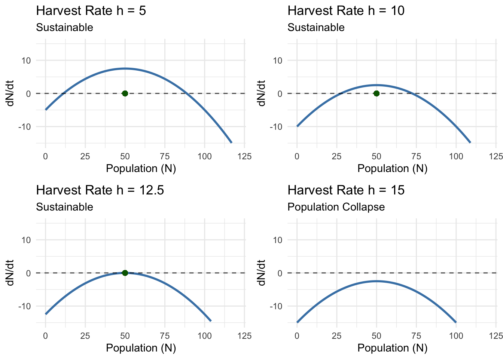

Chapter 4 Nonlinear Dynamics in One Dimension
You’re watching a video of bacteria under a microscope. At first, the population doubles every twenty minutes—classic exponential growth. But something curious happens as the petri dish fills up. The doubling slows, then stops altogether. The population doesn’t collapse; it stabilizes at some maximum level, fluctuating gently around a steady state.
This isn’t failure of our exponential model—it’s the emergence of something far richer: nonlinear dynamics. Where linear equations gave us predictable exponential curves, nonlinear equations reveal systems that can settle into equilibrium, oscillate between states, or exhibit behavior so complex it appears random.
In our previous post, we conquered separable differential equations using the power of separation of variables. We learned to predict when hot chocolate reaches drinking temperature and how salt accumulates in mixing tanks. But those examples shared a crucial limitation: they were fundamentally linear in their dependent variables. Today, we venture beyond this comfortable realm into the fascinating world of nonlinear dynamics.
4.1 When More Becomes Different
Consider our bacterial population again. The exponential model \(\frac{dN}{dt} = rN\) works perfectly when resources are unlimited. But real bacteria compete for space and nutrients. As population density increases, growth rate decreases.
The simplest model capturing this reality is the logistic equation:
\[\frac{dN}{dt} = rN\left(1 - \frac{N}{K}\right)\]
Here, \(r\) is the intrinsic growth rate and \(K\) is the carrying capacity—the maximum population the environment can sustain.
This single equation, despite its innocent appearance, exhibits behavior impossible in linear systems. When \(N\) is small compared to \(K\), the term \((1 - N/K) \approx 1\), and we recover exponential growth. But as \(N\) approaches \(K\), growth slows to zero.
Unlike our previous separable equations, the logistic equation reveals something profound about equilibrium. Where do populations settle? What happens if we disturb them? These questions lead us to the concept of fixed points and stability.
4.2 Finding the Balance Points
For any differential equation of the form \(\frac{dx}{dt} = f(x)\), fixed points (or equilibrium points) occur where the rate of change equals zero:
\[f(x^*) = 0\]
These are the values where the system stops changing—points of equilibrium.
For the logistic equation, we need:
\[rN\left(1 - \frac{N}{K}\right) = 0\]
This gives us two fixed points:
- \(N^* = 0\) (extinction)
- \(N^* = K\) (carrying capacity)
But knowing where equilibria exist isn’t enough. We need to understand their stability. If we slightly perturb the system from equilibrium, does it return or drift away?
The key insight comes from examining the derivative of \(f(x)\) at the fixed point. For \(f'(x^_) < 0\), small perturbations decay back to equilibrium—the fixed point is stable. For \(f'(x^_) > 0\), perturbations grow away from equilibrium—the fixed point is unstable.
Let’s check our logistic fixed points. With \(f(N) = rN(1 - N/K)\):
\[f'(N) = r\left(1 - \frac{N}{K}\right) + rN\left(-\frac{1}{K}\right) = r\left(1 - \frac{2N}{K}\right)\]
At \(N^* = 0\): \(f'(0) = r > 0\) (unstable—a small population will grow) At \(N^* = K\): \(f'(K) = r(1 - 2) = -r < 0\) (stable—populations near carrying capacity return to it)
4.3 The Logistic Portrait
Let’s visualize this behavior with R:
# Load required libraries
library(ggplot2)
library(dplyr)
library(gridExtra)
# Parameters for logistic growth
r <- 0.5 # growth rate
K <- 100 # carrying capacity
# Define the logistic function
logistic <- function(N) r * N * (1 - N/K)
# Create N values for phase portrait
N_vals <- seq(0, 120, by = 1)
dN_dt <- logistic(N_vals)
# Phase portrait data
phase_data <- data.frame(
N = N_vals,
dN_dt = dN_dt
)
# Solution trajectories for different initial conditions
time <- seq(0, 20, by = 0.1)
initial_conditions <- c(5, 25, 75, 110)
# Solve logistic equation analytically
logistic_solution <- function(t, N0, r, K) {
K / (1 + ((K - N0) / N0) * exp(-r * t))
}
# Create trajectory data
trajectory_data <- data.frame()
for (i in seq_along(initial_conditions)) {
N0 <- initial_conditions[i]
N_t <- logistic_solution(time, N0, r, K)
temp_data <- data.frame(
time = time,
N = N_t,
initial = paste("N₀ =", N0)
)
trajectory_data <- rbind(trajectory_data, temp_data)
}
# Create phase portrait
phase_plot <- ggplot(phase_data, aes(x = N, y = dN_dt)) +
geom_line(color = "steelblue", size = 1.2) +
geom_hline(yintercept = 0, linetype = "dashed", alpha = 0.7) +
geom_vline(xintercept = c(0, K), linetype = "dashed", alpha = 0.7, color = "red") +
geom_point(aes(x = 0, y = 0), color = "red", size = 3) +
geom_point(aes(x = K, y = 0), color = "darkgreen", size = 3) +
annotate("text", x = 5, y = 2, label = "Unstable", color = "red") +
annotate("text", x = K-5, y = -2, label = "Stable", color = "darkgreen") +
labs(
title = "Phase Portrait: Logistic Growth",
x = "Population (N)",
y = "Growth Rate (dN/dt)",
subtitle = "Fixed points and flow direction"
) +
theme_minimal() +
xlim(0, 120)
# Create trajectory plot
trajectory_plot <- ggplot(trajectory_data, aes(x = time, y = N, color = initial)) +
geom_line(size = 1) +
geom_hline(yintercept = K, linetype = "dashed", alpha = 0.7) +
annotate("text", x = 15, y = K+5, label = paste("Carrying Capacity =", K)) +
labs(
title = "Solution Trajectories",
x = "Time",
y = "Population (N)",
color = "Initial Condition",
subtitle = "All trajectories converge to carrying capacity"
) +
theme_minimal() +
theme(legend.position = "bottom")
# Display both plots
grid.arrange(phase_plot, trajectory_plot, ncol = 1)## Warning in geom_point(aes(x = 0, y = 0), color = "red", size = 3): All aesthetics have length 1, but the data has 121 rows.
## ℹ Please consider using `annotate()` or provide this layer with data containing a single row.## Warning in geom_point(aes(x = K, y = 0), color = "darkgreen", size = 3): All aesthetics have length 1, but the data has 121 rows.
## ℹ Please consider using `annotate()` or provide this layer with data containing a single row.
The phase portrait (top) shows how the growth rate varies with population size. The arrows indicate flow direction—where populations move over time. Notice how all arrows point toward the stable fixed point at \(N = K\).
The trajectory plot (bottom) reveals the S-shaped logistic curve familiar from biology textbooks. Regardless of initial conditions, all populations eventually settle at carrying capacity.
4.4 Beyond Simple Equilibrium: Bistable Systems
Not all nonlinear systems are as well-behaved as the logistic equation. Consider a more complex ecological scenario where a population faces an Allee effect—individuals struggle to survive when population density is too low (perhaps they can’t find mates or defend against predators effectively).
A simple model incorporating this effect is:
\[\frac{dN}{dt} = rN\left(\frac{N}{A} - 1\right)\left(1 - \frac{N}{K}\right)\]
where \(A\) is the Allee threshold—populations below this level decline toward extinction.
Let’s find the fixed points by setting the right side to zero:
\[rN\left(\frac{N}{A} - 1\right)\left(1 - \frac{N}{K}\right) = 0\]
This gives us three fixed points:
- \(N^* = 0\) (extinction)
- \(N^* = A\) (Allee threshold)
- \(N^* = K\) (carrying capacity)
Now for stability analysis. The derivative is complex, but we can reason about stability from the phase portrait. Between fixed points, we need to determine the sign of \(\frac{dN}{dt}\).
For \(0 < N < A\): The factor \((N/A - 1) < 0\), while \((1 - N/K) > 0\), so \(\frac{dN}{dt} < 0\) (population declines). For \(A < N < K\): Both factors \((N/A - 1) > 0\) and \((1 - N/K) > 0\), so \(\frac{dN}{dt} > 0\) (population grows). For \(N > K\): The factor \((1 - N/K) < 0\), while \((N/A - 1) > 0\), so \(\frac{dN}{dt} < 0\) (population declines).
This creates a bistable system: populations either go extinct (if they start below \(A\)) or survive at carrying capacity (if they start above \(A\)). The Allee threshold at \(N = A\) is an unstable equilibrium—a knife-edge balance where the slightest push determines fate.
# Parameters for bistable system (Allee effect)
r <- 0.3
A <- 30 # Allee threshold
K <- 100 # carrying capacity
# Define the Allee function
allee <- function(N) r * N * (N/A - 1) * (1 - N/K)
# Create phase portrait
N_vals <- seq(0, 120, by = 0.5)
dN_dt <- allee(N_vals)
allee_phase_data <- data.frame(
N = N_vals,
dN_dt = dN_dt
)
# Create trajectories for different initial conditions
initial_conditions_allee <- c(10, 25, 35, 80)
# Numerical solution (since analytical solution is complex)
solve_allee <- function(N0, time_span = 50, dt = 0.1) {
times <- seq(0, time_span, by = dt)
N <- numeric(length(times))
N[1] <- N0
for (i in 2:length(times)) {
N[i] <- N[i-1] + dt * allee(N[i-1])
if (N[i] < 0) N[i] <- 0 # Prevent negative populations
}
return(data.frame(time = times, N = N))
}
# Generate trajectory data
allee_trajectory_data <- data.frame()
for (i in seq_along(initial_conditions_allee)) {
N0 <- initial_conditions_allee[i]
temp_data <- solve_allee(N0, time_span = 30)
temp_data$initial <- paste("N₀ =", N0)
allee_trajectory_data <- rbind(allee_trajectory_data, temp_data)
}
# Phase portrait for Allee effect
allee_phase_plot <- ggplot(allee_phase_data, aes(x = N, y = dN_dt)) +
geom_line(color = "purple", size = 1.2) +
geom_hline(yintercept = 0, linetype = "dashed", alpha = 0.7) +
geom_vline(xintercept = c(0, A, K), linetype = "dashed", alpha = 0.7, color = "red") +
geom_point(aes(x = 0, y = 0), color = "darkgreen", size = 3) +
geom_point(aes(x = A, y = 0), color = "red", size = 3) +
geom_point(aes(x = K, y = 0), color = "darkgreen", size = 3) +
annotate("text", x = 0, y = -1, label = "Stable", color = "darkgreen") +
annotate("text", x = A, y = 1, label = "Unstable", color = "red") +
annotate("text", x = K, y = -1, label = "Stable", color = "darkgreen") +
labs(
title = "Bistable System: Allee Effect",
x = "Population (N)",
y = "Growth Rate (dN/dt)",
subtitle = "Two stable states separated by unstable threshold"
) +
theme_minimal() +
xlim(0, 120)
# Trajectory plot for Allee effect
allee_trajectory_plot <- ggplot(allee_trajectory_data, aes(x = time, y = N, color = initial)) +
geom_line(size = 1) +
geom_hline(yintercept = c(0, A, K), linetype = "dashed", alpha = 0.7) +
annotate("text", x = 20, y = A+3, label = paste("Allee Threshold =", A)) +
annotate("text", x = 20, y = K+3, label = paste("Carrying Capacity =", K)) +
labs(
title = "Bistable Dynamics",
x = "Time",
y = "Population (N)",
color = "Initial Condition",
subtitle = "Fate depends on initial population size"
) +
theme_minimal() +
theme(legend.position = "bottom")
# Display both plots
grid.arrange(allee_phase_plot, allee_trajectory_plot, ncol = 1)## Warning in geom_point(aes(x = 0, y = 0), color = "darkgreen", size = 3): All aesthetics have length 1, but the data has 241 rows.
## ℹ Please consider using `annotate()` or provide this layer with data containing a single row.## Warning in geom_point(aes(x = A, y = 0), color = "red", size = 3): All aesthetics have length 1, but the data has 241 rows.
## ℹ Please consider using `annotate()` or provide this layer with data containing a single row.## Warning in geom_point(aes(x = K, y = 0), color = "darkgreen", size = 3): All aesthetics have length 1, but the data has 241 rows.
## ℹ Please consider using `annotate()` or provide this layer with data containing a single row.
The bistable system reveals something profound: history matters. Two identical environments can end up in completely different states depending on their past. A population starting at \(N_0 = 25\) goes extinct, while one starting at \(N_0 = 35\) thrives—a difference of just 10 individuals determines survival or extinction.
This sensitivity to initial conditions appears throughout ecology, economics, and social systems. Markets can settle into high-trust or low-trust equilibria. Lakes can remain clear or become turbid. Social movements can fizzle out or reach critical mass.
4.5 The Geometry of Dynamics
Working with nonlinear differential equations requires developing geometric intuition. The phase portrait—a plot of \(\frac{dx}{dt}\) versus \(x\)—reveals the system’s complete behavioral repertoire at a glance.
Key features to look for:
Fixed Points: Where the curve crosses the horizontal axis (\(\frac{dx}{dt} = 0\)).
Stability: Determined by the slope at fixed points. Negative slopes indicate stability (arrows point toward the fixed point), positive slopes indicate instability (arrows point away).
Flow Direction: Above the axis, \(\frac{dx}{dt} > 0\), so \(x\) increases (rightward flow). Below the axis, \(\frac{dx}{dt} < 0\), so \(x\) decreases (leftward flow).
Basins of Attraction: Regions of initial conditions leading to the same long-term fate. In bistable systems, these basins are separated by unstable fixed points.
This geometric perspective transforms equation-solving into pattern recognition. Complex dynamics become visible as landscapes of hills (unstable points) and valleys (stable points), with trajectories flowing downhill according to the system’s internal logic.
4.6 Harvesting and Catastrophic Collapse
Let’s explore a darker application: what happens when we harvest a population governed by logistic growth? Suppose we remove individuals at a constant rate \(h\):
\[\frac{dN}{dt} = rN\left(1 - \frac{N}{K}\right) - h\]
For small harvest rates, this seems manageable—just reduce the equilibrium population slightly. But nonlinear systems can surprise us.
The fixed points satisfy:
\[rN^_\left(1 - \frac{N^_}{K}\right) - h = 0\]
Rearranging:
\[rN^* - \frac{r(N^*)^2}{K} - h = 0\]
This is a quadratic equation in \(N^*\):
\[\frac{r}{K}(N^_)^2 - rN^_ + h = 0\]
Using the quadratic formula:
\[N^* = \frac{r \pm \sqrt{r^2 - 4(r/K)h}}{2(r/K)} = \frac{K}{2}\left(1 \pm \sqrt{1 - \frac{4h}{rK}}\right)\]
For real solutions, we need the discriminant to be non-negative:
\[1 - \frac{4h}{rK} \geq 0\]
This gives us a critical harvest rate:
\[h_{crit} = \frac{rK}{4}\]
For \(h < h_{crit}\), we have two fixed points. For \(h > h_{crit}\), no equilibrium exists—any harvest rate exceeding this threshold drives the population to extinction regardless of initial conditions.
library(ggplot2)
library(gridExtra)
# Parameters for harvesting model
r <- 0.5
K <- 100
h_values <- c(5, 10, 12.5, 15) # Different harvest rates
h_crit <- r * K / 4 # Critical harvest rate = 12.5
# Create multiple phase portraits
harvesting_plots <- list()
for (i in seq_along(h_values)) {
h <- h_values[i]
# Define harvesting function
harvesting <- function(N) r * N * (1 - N/K) - h
# Create phase data
N_vals <- seq(0, 120, by = 1)
dN_dt <- harvesting(N_vals)
phase_data <- data.frame(
N = N_vals,
dN_dt = dN_dt
)
# Find fixed points (approximately)
if (h <= h_crit) {
N_fixed1 <- (K/2) * (1 - sqrt(1 - 4*h/(r*K)))
N_fixed2 <- (K/2) * (1 + sqrt(1 - 4*h/(r*K)))
}
p <- ggplot(phase_data, aes(x = N, y = dN_dt)) +
geom_line(color = "steelblue", size = 1) +
geom_hline(yintercept = 0, linetype = "dashed", alpha = 0.7) +
labs(
title = paste("Harvest Rate h =", h),
x = "Population (N)",
y = "dN/dt",
subtitle = ifelse(h <= h_crit, "Sustainable", "Population Collapse")
) +
theme_minimal() +
xlim(0, 120) +
ylim(-15, 15)
if (h <= h_crit) {
p <- p +
geom_point(aes(x = N_fixed1, y = 0), color = "red", size = 2) +
geom_point(aes(x = N_fixed2, y = 0), color = "darkgreen", size = 2)
}
harvesting_plots[[i]] <- p
}
# Arrange plots
do.call(grid.arrange, c(harvesting_plots, ncol = 2))## Warning in geom_point(aes(x = N_fixed1, y = 0), color = "red", size = 2): All aesthetics have length 1, but the data has 121 rows.
## ℹ Please consider using `annotate()` or provide this layer with data containing a single row.## Warning in geom_point(aes(x = N_fixed2, y = 0), color = "darkgreen", size = 2): All aesthetics have length 1, but the data has 121 rows.
## ℹ Please consider using `annotate()` or provide this layer with data containing a single row.## Warning: Removed 3 rows containing missing values or values outside the scale range (`geom_line()`).## Warning in geom_point(aes(x = N_fixed1, y = 0), color = "red", size = 2): All aesthetics have length 1, but the data has 121 rows.
## ℹ Please consider using `annotate()` or provide this layer with data containing a single row.## Warning in geom_point(aes(x = N_fixed2, y = 0), color = "darkgreen", size = 2): All aesthetics have length 1, but the data has 121 rows.
## ℹ Please consider using `annotate()` or provide this layer with data containing a single row.## Warning: Removed 11 rows containing missing values or values outside the scale range (`geom_line()`).## Warning in geom_point(aes(x = N_fixed1, y = 0), color = "red", size = 2): All aesthetics have length 1, but the data has 121 rows.
## ℹ Please consider using `annotate()` or provide this layer with data containing a single row.## Warning in geom_point(aes(x = N_fixed2, y = 0), color = "darkgreen", size = 2): All aesthetics have length 1, but the data has 121 rows.
## ℹ Please consider using `annotate()` or provide this layer with data containing a single row.## Warning: Removed 16 rows containing missing values or values outside the scale range (`geom_line()`).## Warning: Removed 20 rows containing missing values or values outside the scale range (`geom_line()`).The harvesting model reveals how nonlinear systems can exhibit catastrophic collapse—sudden transitions from stable to unstable states as parameters cross critical thresholds. Below the critical harvest rate, the population settles into a reduced but sustainable equilibrium. Above it, no equilibrium exists, and the population inevitably crashes to extinction.
This threshold behavior appears throughout complex systems. Coral reefs suddenly bleach when ocean temperatures exceed critical values. Financial markets can transition rapidly from stable to chaotic. Climate systems may have tipping points beyond which feedback loops drive irreversible change.
4.7 The Richness of One Dimension
Even in one dimension, nonlinear differential equations reveal remarkable complexity. We’ve seen systems with multiple equilibria, threshold effects, and catastrophic transitions. But we’ve only scratched the surface.
Consider the equation:
\[\frac{dx}{dt} = x^3 - x\]
This simple cubic produces three fixed points: \(x^* = -1, 0, 1\). The outer points are stable, the center point unstable, creating another bistable system. Small changes in initial conditions near \(x = 0\) determine whether the system settles at \(x = -1\) or \(x = 1\).
Or explore the transcendental equation:
\[\frac{dx}{dt} = \sin(x) - \gamma\]
For \(\gamma < 1\), this system has multiple stable and unstable fixed points, creating a landscape of alternating attraction and repulsion. As \(\gamma\) increases toward 1, stable and unstable points approach each other, eventually colliding and disappearing in what mathematicians call a saddle-node bifurcation.
These phenomena—bistability, thresholds, bifurcations—emerge naturally from nonlinear dynamics. They’re not mathematical curiosities but fundamental features of complex systems.
4.8 Building Intuition for the Nonlinear World
Working with nonlinear equations develops a different kind of mathematical intuition. Where linear thinking emphasizes proportionality and superposition, nonlinear thinking recognizes thresholds, feedback loops, and emergent behavior.
Key insights to remember:
Small Changes, Big Effects: In nonlinear systems, tiny differences in initial conditions or parameters can lead to dramatically different outcomes.
Multiple Equilibria: Complex systems often have more than one stable state. Which state emerges depends on history and initial conditions.
Thresholds Matter: Many systems exhibit critical values—cross them and behavior changes qualitatively.
Stability is Local: A system might be stable to small perturbations but unstable to large ones.
These principles appear across disciplines. Population ecologists study tipping points in ecosystem collapse. Economists analyze multiple equilibria in markets. Climate scientists investigate threshold effects in global warming. Neuroscientists examine bistable states in neural networks.
4.9 The Path Forward
We’ve explored the rich behavior possible in one-dimensional nonlinear systems—from simple logistic growth to bistable dynamics and catastrophic collapse. We’ve learned to read phase portraits like maps, identifying stable valleys and unstable peaks in the landscape of dynamics.
But the real world is rarely one-dimensional. Predators interact with prey, diseases spread through populations, and chemical reactions involve multiple species. In our next post, we’ll extend these concepts to systems of differential equations, where multiple variables change simultaneously, each influencing the others.
We’ll discover that two-dimensional systems can exhibit behaviors impossible in one dimension: closed orbital trajectories, limit cycles, and strange attractors. We’ll explore the famous Lotka-Volterra predator-prey model and see how competition between species creates complex dynamics.
The mathematical techniques you’ve learned today—finding fixed points, analyzing stability, reading phase portraits—form the foundation for understanding these multi-dimensional systems. Every complex system, no matter how many variables it contains, can be understood by building up from these basic concepts.
The world is nonlinear, and now you have the tools to read its hidden patterns.